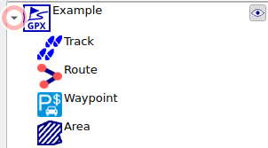
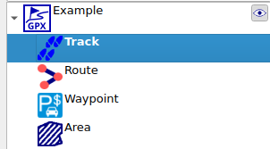
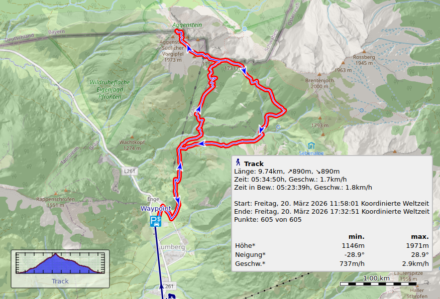
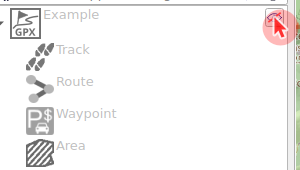

Eine GPX-Datei laden#
Diese Seite zeigt, wie Sie eine GPX-Datei in QMapShack laden, ihre Tracks und Wegpunkte ansehen und sie auf der Karte finden.
Bilder: © OpenStreetMap contributors; Datenquelle: Land Tirol - data.tirol.gv.at, CC BY 4.0;
Example.gpx: fuzzybear, CC BY-SA 4.0.
Die Datei laden#
Eine GPX-Datei (GPS Exchange Format) enthält Tracks, Wegpunkte und Routen. GPS-Geräte, Apps und Websites zur
Tourenplanung speichern und teilen sie in diesem Format. Die Bilder auf dieser Seite zeigen Example.gpx, eine Tour
rund um den Aggenstein.
Klicken Sie auf Datei → GIS Daten laden oder drücken Sie Strg+L.
Wählen Sie die GPX-Datei aus und klicken Sie auf Öffnen. Um mehrere Dateien auf einmal zu laden, halten Sie Strg gedrückt und klicken Sie nacheinander auf die Dateien.
Der Dialog öffnet sich in dem Verzeichnis, aus dem Sie zuletzt geladen oder in das Sie zuletzt gespeichert haben.
Wenn Sie das Hauptverzeichnis eingerichtet haben, stellt
QMapShack den Dialog auf dessen Verzeichnis GPX, einen guten Ort für Ihre Dateien.
Statt über das Menü können Sie Dateien auch aus Ihrem Dateimanager auf die Karte ziehen.
QMapShack lädt auch seine eigenen .qms-Dateien und Dateien anderer Geräte und Programme: .fit, .tcx, .slf,
.sml, .log und .qlb.
Das Projekt im Arbeitsplatz#
QMapShack lädt eine Datei als Projekt: die Tracks, Routen, Wegpunkte und Gebiete einer Datei, zusammengefasst. Der Bereich Arbeitsplatz (siehe Das Hauptfenster) listet es unter dem Namen, der in der Datei steht, oder unter dem Dateinamen, wenn die Datei keinen enthält. QMapShack zeigt alles im Projekt sofort auf der Karte.

Klicken Sie auf den Pfeil links neben dem Projektnamen. Die Tracks, Routen, Wegpunkte und Gebiete des Projekts erscheinen darunter. Tracks, Routen und Gebiete haben ein Symbol für ihre Art, ein Wegpunkt zeigt sein Wegpunktsymbol.
Halten Sie den Mauszeiger über den Namen eines Elements (Track, Route, Wegpunkt oder Gebiet). Ein Tooltip zeigt eine Zusammenfassung des Elements.
Ein Element auf der Karte finden#

Doppelklicken Sie auf ein Element im Bereich Arbeitsplatz. Die Karte zoomt auf das Element.
Bei einem Track hebt QMapShack den Track außerdem auf der Karte hervor. Ein Kasten unten rechts zeigt eine Zusammenfassung des Tracks: Länge, Anstieg, Zeit, Geschwindigkeit und mehr. Ein kleines Diagramm unten links zeigt das Höhenprofil des Tracks.

Ein Projekt auf der Karte ausblenden#

Klicken Sie auf den Knopf mit dem Auge rechts in der Zeile des Projekts. Alles im Projekt verschwindet von der Karte, und das Projekt und seine Elemente werden grau.
Klicken Sie noch einmal auf den Knopf mit dem Auge, um das Projekt wieder anzuzeigen.
Solange ein Projekt ausgeblendet ist, ändert ein Doppelklick auf eines seiner Elemente den Kartenausschnitt nicht.
Den Arbeitsplatz behalten#
QMapShack merkt sich die Projekte im Bereich Arbeitsplatz bis zum nächsten Start.
Dafür speichert es eine eigene Kopie jedes Projekts und lässt die geladene Datei unverändert. QMapShack schreibt eine Änderung erst in die Datei, wenn Sie das Projekt speichern.
QMapShack speichert den Arbeitsplatz alle 5 Minuten und beim Beenden. So ändern Sie das Intervall:
Klicken Sie auf Arbeitsplatz → Arbeitsplatz konfigurieren.
Stellen Sie auf dem Reiter Allgemein die Minuten neben Arbeitsplatz beim Beenden speichern, und alle ein. Mit 0 speichert QMapShack den Arbeitsplatz nur beim Beenden.
Klicken Sie auf OK, bestätigen Sie die Meldung und starten Sie QMapShack neu. Die neue Einstellung gilt erst nach einem Neustart.
Wenn Sie das Kontrollkästchen vor Arbeitsplatz beim Beenden speichern, und alle deaktivieren, speichert QMapShack den Arbeitsplatz nicht mehr. Beim nächsten Start ist der Arbeitsplatz so, wie er zuletzt gespeichert wurde.